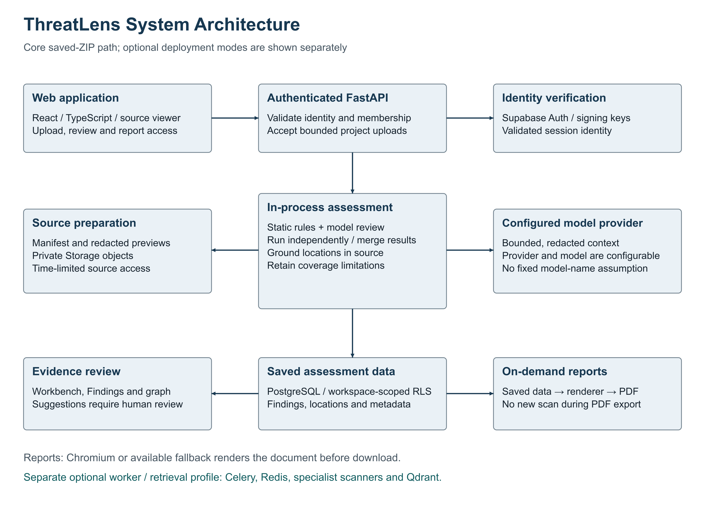
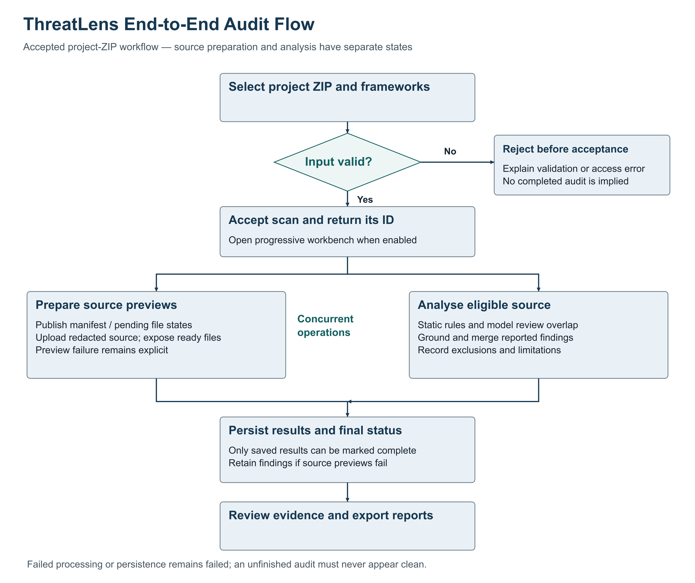
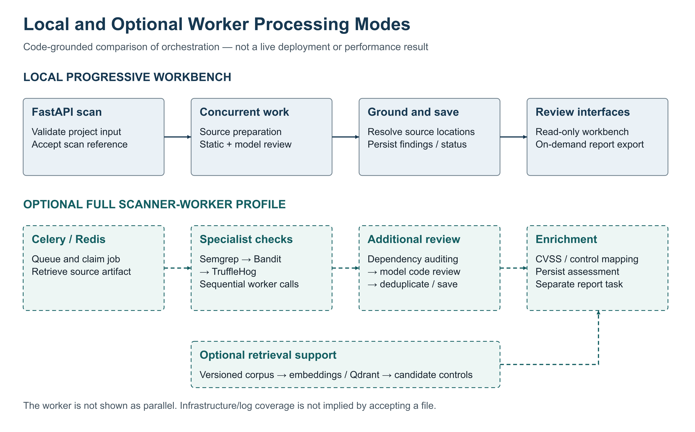

Section 1.8 Main Contributions

Figure 1.1: ThreatLens architecture for the saved-ZIP workflow, including authenticated processing, source preparation, analysis, private persistence and evidence review.
Section 3.4 Source Code Ingestion and Preprocessing

Figure 3.2: End-to-end audit flow showing validation, scan acceptance, concurrent source preparation and analysis, persistence and review.
Section 4.6 Background Processing and Deployment Modes

Figure 4.1: Local progressive workbench and optional scanner-worker processing modes. Worker checks are shown in their implemented sequence.